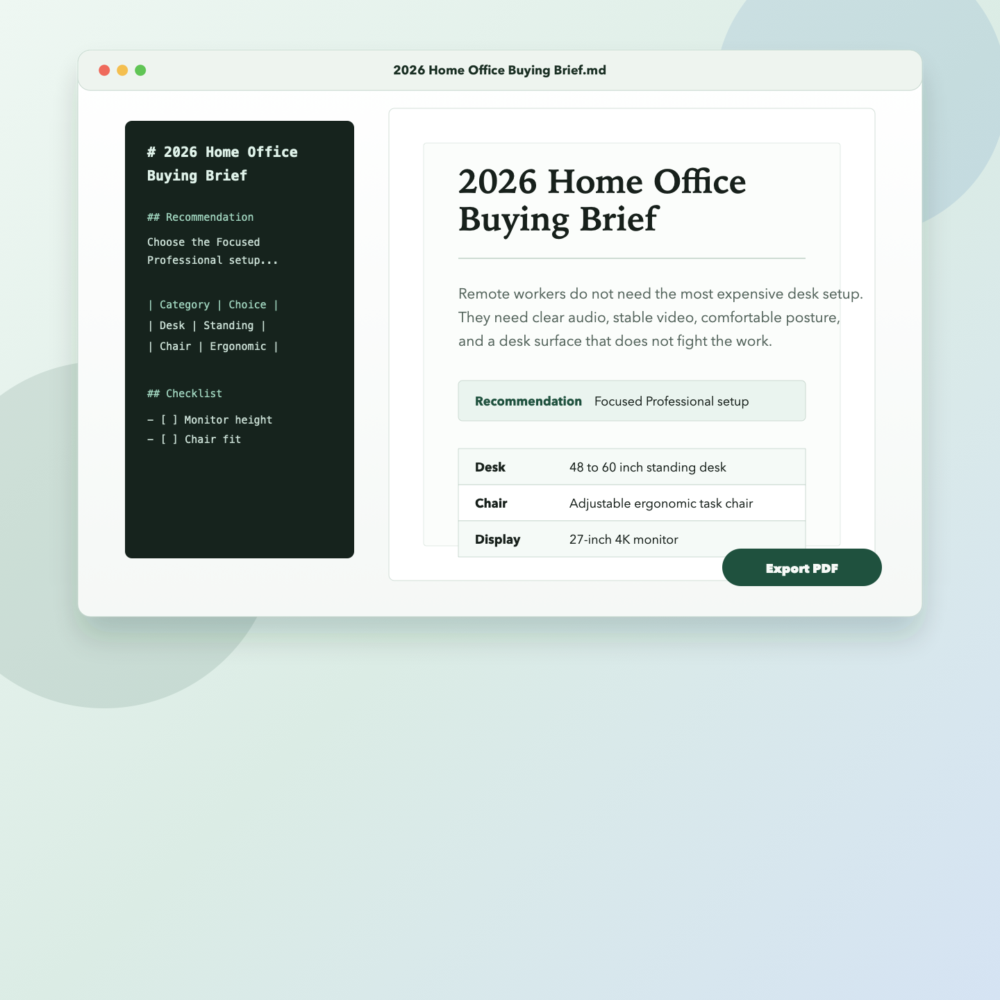

Your AI gives you Markdown. ViewMD makes it readable.
Open AI-generated `.md` files directly on your Mac, read them in a polished document view, and export a clean PDF beside the original. The first public beta is unsigned and built for technical early users.

From AI output to normal Mac document.
ViewMD is not trying to be another Markdown editor. It focuses on the common handoff: your AI creates a `.md` file, and you need to read or send it.
Double-click a Markdown file from ChatGPT, Claude, Codex, Cursor, or another AI workflow.
Read headings, lists, tables, code blocks, and task lists in a polished PDF-style layout.
Export `report.pdf` beside `report.md`, ready to share without hunting through Downloads.
Local by default.
Your Markdown files are opened on your Mac. ViewMD does not upload file contents to a server.
Honest V1 scope.
- Reader-first, not a Markdown editor.
- Distributed first through GitHub Releases as an unsigned public beta.
- Some advanced Markdown extensions may render differently than AI previews.
Help shape the public beta.
ViewMD is looking for Mac users who already get Markdown from AI tools. Try one real file, export one PDF, and tell us where the workflow breaks.
Open a real `.md` file from ChatGPT, Claude, Cursor, Codex, or another agent workflow.
Use Export PDF and confirm whether the PDF lands beside the original source file.
Send the first point of confusion, the file type you tried, and whether you would use it again.
Download the unsigned public beta.
The first public build ships through GitHub Releases with a SHA-256 checksum and an explicit macOS warning. It is not notarized yet, so macOS may require Apple's per-app Open Anyway flow.